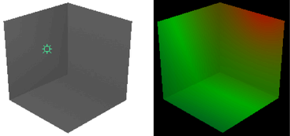

根据设置这些选项的编辑器，您可能会看到以下所有属性或其子集：
- 类型(Type)
-
单击箭头，从下拉列表中选择一种灯光类型。当您更改灯光的类型时，只有那些为这两个类型所共有的属性会保留以前的值或设置。非共有属性的值和设置将丢失。当您更改灯光的灯光类型时，灯光的位置也将保留。
- 颜色(Color)
-
设置灯光的颜色。单击样例以在“颜色选择器”(Color Chooser)中更改灯光的颜色或将纹理映射到灯光。如果映射纹理，灯光将对它进行投影（取决于灯光“类型”(Type)）。默认设置为白色。以下显示当您将渐变纹理映射到环境光的“颜色”(Color)属性时的渲染结果。
 - 强度(Intensity)
-
表示灯光的亮度。“强度”(Intensity)值为 0 的灯光不发光。“强度”(Intensity)值为负值的灯光从受灯光影响的区域中的场景移除灯光。该滑块范围是 0 到 10，但您可以键入更大值以获得更亮的灯光（例如，20）。默认值是 1。
提示：使用负“强度”(Intensity)值减少或移除强光点或眩光。
区域光而非整体的光的“强度”(Intensity)将基于每个区域单位上的强度。
- 默认照明(Illuminates by Default)
-
如果启用该选项，灯光将照亮所有对象并包含在 defaultLightSet 中。如果禁用该选项，灯光仅照亮其链接到的对象。默认情况下“默认照明”(Illuminates by Default)处于启用状态。
- “发射漫反射”(Emit Diffuse)和“发射镜面反射”(Emit Specular)
-
默认情况下“发射漫反射”(Emit Diffuse)和“发射镜面反射”(Emit Specular)处于启用状态。禁用这两个选项将对灯光禁用漫反射和镜面反射着色结果。
注：结果不会显示在场景视图中。若要查看结果，请在“渲染视图”(Render View)中测试渲染。

若要同时对多个灯光启用或禁用漫反射和镜面反射着色，请使用“渲染标志”(Rendering Flags)窗口（“窗口 > 渲染编辑器 > 渲染标志”(Windows > Rendering Editors > Rendering Flags)）。
- 衰退速率(Decay Rate)
-
控制灯光的强度随着距离而下降的速度。“衰退速率”(Decay Rate)设置对于小于 1 个单位的距离没有影响。默认设置为“无衰退”(No Decay)。
有关灯光衰退的详细信息，请参见灯光衰退。
提示：“衰退速率”(Decay Rate)还将控制雾的亮度是如何从光源处随着距离而下降的。
在“属性编辑器”(Attribute Editor)，单击箭头显示下拉列表，并选择“衰退速率”(Decay Rate)在选项窗口中，键入一个值或使用滑块。
无衰退(No Decay)
无衰退；灯光将会照到所有对象
线性(Linear)
灯光强度将随着距离而直接（以线性方式）下降（比真实世界灯光要慢）。
二次方(Quadratic)
灯光强度将与距离的平方成比例地下降（与真实世界灯光等速）
立方(Cubic)
灯光强度将与距离的立方成比例地下降（比真实世界灯光要快）
- 归一化(Normalize)
-
启用此选项后，“强度”(Intensity)属性表示发射的灯光总量，无论灯光的大小如何。
禁用此选项后，“强度”(Intensity)属性表示每曲面单位的灯光强度。随着灯光大小的增加，灯光强度也会增加。
因此，可以单独控制灯光总强度和灯光曲面区域。例如，可以通过更改灯光的大小来调整阴影，而发射的灯光总量不受影响。默认情况下，该选项处于启用状态。
注：与旧版场景的兼容性
在引用、导入或打开使用 Maya 2019.2 或先前版本创建的旧版场景时，会自动为区域光启用此选项。
因此，如果使用 Maya 软件渲染器或 Maya 硬件 2.0 渲染器进行渲染，则场景的视口表示或最终渲染可能会有所不同。
若要还原到先前版本中的行为，请禁用此选项。
由于 Arnold for Maya 渲染器在渲染时始终归一化 Maya 区域光，因此使用 Arnold 进行渲染时，各 Maya 版本之间的渲染结果不会存在差异。
- 阴影(Shadows)
-
有关阴影的信息，请参见阴影属性。
- 交互式放置
-
当创建新的区域光时，可以启用交互式放置，以便在创建上述灯光之后可以自动浏览此灯光。然后，可以按住 Alt 键拖动（在 Mac OS X 上为按住 Option 键拖动）以翻滚光源并将其定位在所需的位置。有关交互式放置的信息，请参见创建时以交互方式放置聚光灯、区域光或平行光。